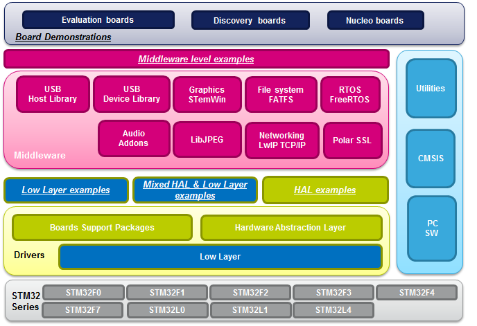

|
STMCube is an STMicroelectronics original initiative to ease developers
life by reducing development efforts, time and cost.
STM32Cube covers STM32 portfolio.
STM32Cube Version 1.x includes:
- The
STM32CubeMX, a graphical software configuration tool that allows to
generate C initialization code using graphical wizards.
- A
comprehensive embedded software platform, delivered per series (such as
STM32CubeL4 for STM32L4 series)
- The
STM32Cube HAL, an STM32 abstraction layer embedded software, ensuring
maximized portability across STM32 portfolio
- A
consistent set of middleware components such as RTOS, USB, TCP/IP,
Graphics
All
embedded software utilities come with a full set of examples.
- The
STM32Cube firmware solution offers a straightforward API with a modular
architecture, making it simple to fine tune custom applications and
scalable to
fit most requirements

Update
History
V1.3.0 /
29-January-2016
Main
Changes
- Update Low Layer drivers to add some new LL API(s) and minor changes (release
notes)
- Add initialization/de-initialization low level API(s) in new stm32l4xx_ll_ppp.c files (under USE_FULL_LL_DRIVER switch)
- HAL I2C update
- Add support of repeated start feature with the following new APIs
- HAL_I2C_Master_Sequential_Transmit_IT(), HAL_I2C_Master_Sequential_Receive_IT() and HAL_I2C_Master_Abort_IT(),
- HAL_I2C_Slave_Sequential_Transmit_IT() and HAL_I2C_Slave_Sequential_Receive_IT()
- HAL_I2C_EnableListen_IT() and HAL_I2C_DisableListen_IT()
- New user callbacks HAL_I2C_ListenCpltCallback() and HAL_I2C_AddrCallback()
- Fix acknowledge failure error management (STOP being automatically generated)
- Review
state machine and provide new API HAL_I2C_GetMode() to return
HAL_I2C_MODE_MASTER, HAL_I2C_MODE_SLAVE or HAL_I2C_MODE_NONE
- HAL SMARTCARD / UART / USART and LL USART update
- HAL SD update
- Fix SD card capacity calculation for cards with capacity over 4GB in HAL_SD_Get_CardInfo()
- BSP QSPI update for STM32L476G_EVAL and STM32L476G-Discovery
- Deactivate automatic timeout in memory mapped mode
- Projects update
- Add new "Init" LL Examples to demonstrate new LL initialization API(s) under \Projects\STM32L476RG-Nucleo\Examples_LL
- \ADC\ADC_ContinuousConversion_TriggerSW_Init
- \COMP\COMP_CompareWithInternalReference_IT_Init
- \DAC\DAC_GenerateWaveform_TriggerHW_Init
- \DMA\DMA_CopyFromFlashToMemory_Init
- \EXTI\EXTI_ToggleLedOnIT_Init
- \GPIO\GPIO_InfiniteLedToggling_Init
- \I2C\I2C_OneBoard_Communication_IT_Init
- \LPTIM\LPTIM_PulseCounter_Init
- \LPUART\LPUART_WakeUpFromStop2_Init
- \OPAMP\OPAMP_PGA_Init
- \RTC\RTC_Alarm_Init
- \SPI\SPI_OneBoard_HalfDuplex_DMA_Init
- \SWPMI\SWPMI_Loopback_MultiSWBuffer_Init
- \TIM\TIM_PWMOutput_Init
- \USART\USART_Communication_Rx_IT_Init
- Add few other LL Examples
- \ADC\ADC_TemperatureSensor
- \UTILS\UTILS_ConfigureSystemClock
- STM2Cube
Level 1 & 2 source files license model changed from "Liberty" to new license
"Ultimate Liberty"
Contents
- Projects
- The
STM32CubeL4 Firmware package comes with a rich set of examples running on
STMicroelectronics boards, organized by board and provided with preconfigured
projects for the main supported toolchains. The exhaustive list of projects is
provided in this table (STM32CubeProjectsList.html).
- Projects
release notes
- STM32L476G-Discovery
- STM32L476G_EVAL
- STM32L476RG-Nucleo
- Drivers
- Middlewares
- Utilities
Development
Toolchains and Compilers
- IAR Embedded
Workbench for ARM (EWARM) toolchain V7.40.7 + ST-Link
- RealView
Microcontroller Development Kit (MDK-ARM) toolchain V5.17 + ST-Link
- System
Workbench STM32 (SW4STM32) toolchain v1.6 + ST-Link
- Atollic
TrueSTUDIO STM32 (TrueSTUDIO) toolchain v5.3.1 + ST-Link
Supported
Devices and EVAL boards
- STM32L47x
devices Rev4
- STM32L476G
Evaluation board RevB
(MB1144-B01)
- STM32L476G
Discovery board RevC (MB1184-C01)
- STM32L476RG
Nucleo kit RevC
Known
limitation
- TrueSTUDIO/SW4STM32
projects are not provided for the STM32L476G-EVAL and
STM32L476G-Discovery demonstrations
V1.2.0
/ 25-November-2015
Main
Changes
- Main HAL and LL Drivers updates (release
notes)
- HAL PWR update (User application code impacted)
- Stop 1 with main regulator renamed into Stop 0, to be aligned with latest version of Reference Manual
- Change HAL_PWREx_EnterSTOP1Mode(uint32_t Regulator, uint8_t STOPEntry) into HAL_PWREx_EnterSTOP1Mode(uint8_t STOPEntry)
- Application code using HAL_PWREx_EnterSTOP1Mode(PWR_LOWPOWERREGULATOR_ON, STOPEntry) must be updated to use HAL_PWREx_EnterSTOP1Mode(STOPEntry)
- Add new API HAL_PWREx_EnterSTOP0Mode(uint8_t STOPEntry)
- Application code using HAL_PWREx_EnterSTOP1Mode(PWR_MAINREGULATOR_ON, STOPEntry) must be updated to use HAL_PWREx_EnterSTOP0Mode(STOPEntry)
- LL PWR update (User application code impacted)
- LL PWR API change to add new Stop 0 mode and update Stop 1 mode definition
- Change LL_PWR_SetPowerMode(uint32_t LowPowerMode) possible LowPowerMode values update
- LL_PWR_MODE_STOP1_LP_REGU renamed into LL_PWR_MODE_STOP1
- Application code using LL_PWR_SetPowerMode(LL_PWR_MODE_STOP1_LP_REGU) must be updated to use LL_PWR_SetPowerMode(LL_PWR_MODE_STOP1)
- LL_PWR_MODE_STOP1_MAIN_REGU renamed into LL_PWR_MODE_STOP0
- Application code using LL_PWR_SetPowerMode(LL_PWR_MODE_STOP1_MAIN_REGU) must be updated to use LL_PWR_SetPowerMode(LL_PWR_MODE_STOP0)
- HAL OPAMP update
- Capability to run calibration despite PGA mode by switching temporary to standalone mode
- HAL SAI update
- Update SAI block synchronization selection (User application code impacted)
- Replace uncomplete SAI_SYNCHRONOUS_EXT value for with SAI_SYNCHRONOUS_EXT_SAI1 and SAI_SYNCHRONOUS_EXT_SAI2
- Add support of 24bits configuration in PCM protocol
- Fix
ambiguous clock strobing values in HAL_SAI_Init() according to ClockStrobing and AudioMode
parameters
- Fix in I2S protocol
- HAL TSC update
- Improve IODefault state management
- BSP
- BSP STM32L476G-EVAL update
- BSP Audio updated to comply with HAL SAI updates
- BSP IDD updated to comply with HAL PWR Stop 1 modes
- Fix FMC timings in BSP NOR and SRAM
- BSP STM32L476G-Discovery update
- BSP Audio updated to comply with HAL SAI updates
- Middlewares
- Projects
- General update of Project examples impacted by HAL_PWREx_EnterSTOP1Mode() API change
- SAI_AudioPlay and DFSDM_AudioRecord examples updated in line with HAL SAI correction
- FMC_NOR and FMC_SRAM examples updated to fix FMC timings on STM32L476G-EVAL board
- TSC_Sensing_1touchkey application update after HAL TSC IODefault state management change
Contents
- Projects
- The
STM32CubeL4 Firmware package comes with a rich set of examples running on
STMicroelectronics boards, organized by board and provided with preconfigured
projects for the main supported toolchains. The exhaustive list of projects is
provided in this table (STM32CubeProjectsList.html).
- Projects
release notes
- STM32L476G-Discovery
- STM32L476G_EVAL
- STM32L476RG-Nucleo
- Drivers
- Middlewares
- Utilities
Development
Toolchains and Compilers
- IAR Embedded
Workbench for ARM (EWARM) toolchain V7.40.3 + ST-Link
- RealView
Microcontroller Development Kit (MDK-ARM) toolchain V5.16 + ST-Link
- System
Workbench STM32 (SW4STM32) toolchain v1.4 + ST-Link
- Atollic
TrueSTUDIO STM32 (TrueSTUDIO) toolchain v5.3.1 + ST-Link
Supported
Devices and EVAL boards
- STM32L47x
devices Rev4
- STM32L476G
Evaluation board RevB
(MB1144-B01)
- STM32L476G
Discovery board RevC (MB1184-C01)
- STM32L476RG
Nucleo kit RevC
Known
limitation
- TrueSTUDIO/SW4STM32
projects are not provided for the STM32L476G-EVAL and
STM32L476G-Discovery demonstrations
V1.1.1
/ 16-October-2015Main
Changes
- Patch release for all Examples/Applications/Demonstrations projects fine-tuning
- Set Flash prefetch off to match defaut system configuration (stm32l4xx_hal_conf.h files)
- This
release contains updated versions of the HAL drivers and
Examples/Applications/Demonstrations projects, user needs simply to
overwrite the old folders with the new ones:
- \Drivers\STM32L4xx_HAL_Drivers
- \Projects
- Main HAL Drivers updates (release
notes)
- HAL TIM update
- Removed
useless assert_param() macro check on input parameters in
HAL_TIM_OC_ConfigChannel(), HAL_TIM_PWM_ConfigChannel() and
HAL_TIM_ConfigClockSource()
- LL ADC update
- Fix
LL_ADC_GetAnalogWDMonitChannels() for AWD2 and AWD3
- LL RCC update
- Add new API
LL_RCC_LSE_DisableCSS()
Contents
V1.1.0
/ 16-September-2015
Main
Changes
- Add Low Layer drivers under
Drivers\STM32L4xx_HAL_Driver
- Low Layer
drivers allow performance and memory footprint optimization
- Low
Layer drivers APIs provide register level programming: they require
deep knowledge of peripherals described in STM32L4x6 Reference Manual
- Low
Layer drivers are available for: ADC, COMP, Cortex, CRC, DAC, DMA,
EXTI, GPIO, I2C, IWDG, LPTIM, LPUART, OPAMP, PWR, RCC, RNG, RTC, SPI,
SWPMI, TIM, USART and WWDG peripherals and additionnal Low Level Bus,
System and Utilities APIs.
- Low Layer
drivers APIs are implemented as static inline function in new Inc/stm32l4xx_ll_ppp.h
files for PPP peripherals, there is no configuration file and each stm32l4xx_ll_ppp.h
file must be included in user code.
- Refer to UM1860 for Low Layer presentation and UM1884 for API list
- Main HAL Drivers updates (release
notes)
- HAL FLASH
- Add option
byte OB_USER_nRST_SHDW to be used with HAL_FLASHEx_OBProgram()
- HAL GPIO
- Rename
GPIO speed definitions to GPIO_SPEED_FREQ_LOW,
GPIO_SPEED_FREQ_MEDIUM, GPIO_SPEED_FREQ_HIGH and
GPIO_SPEED_FREQ_VERY_HIGH
- HAL PWR
- Fix
HAL_PWR_DisableWakeUpPin() to clear only appropriate bits in PWR CR3
register
- Combination
of GPIO pins possible in HAL_PWREx_EnableGPIOPullUp(),
HAL_PWREx_DisableGPIOPullUp(), HAL_PWREx_EnableGPIOPullDown() and
HAL_PWREx_DisableGPIOPullDown()
- HAL RCC
- Add
LSE Clock Security System (CSS) management with new APIs:
HAL_RCCEx_EnableLSECSS_IT(), HAL_RCCEx_LSECSS_IRQHandler() and
HAL_RCCEx_LSECSS_Callback()
- Add
RCC_MCO1SOURCE_NOCLOCK to provide capability to disable MCO output in
HAL_RCC_MCOConfig()
- Update
HAL_RCC_OscConfig() and HAL_RCCEx_PeriphCLKConfig() to keep backup
domain enabled when configuring respectively LSE and RTC clock
source
- Update
HAL_RCCEx_DisablePLLSAI1() and HAL_RCCEx_DisablePLLSAI2()
to disable
respectively PLLSAI1 and PLLSAI2 clock outputs
- Update
HAL_RCCEx_GetPeriphCLKFreq() to return the frequency in Hz applied to
peripherals via HAL_RCCEx_PeriphCLKConfig()
- Projects
- Add support of System Workbench for STM32 (SW4STM32) toolchain
- Set of Low Layer drivers Examples and mix of HAL/Low Layer drivers Examples for NUCLEO-L476RG
- Under \Projects\STM32L476RG-Nucleo\Examples_LL (New)
- Under \Projects\STM32L476RG-Nucleo\Examples_MIX (New)
- STM32L476G-Discovery demonstration FW (V1.0.3) update
Contents
- Projects
- The
STM32CubeL4 Firmware package comes with a rich set of examples running on
STMicroelectronics boards, organized by board and provided with preconfigured
projects for the main supported toolchains. The exhaustive list of projects is
provided in this table (STM32CubeProjectsList.html).
- Projects
release notes
- STM32L476G-Discovery
- STM32L476G_EVAL
- STM32L476RG-Nucleo
- Drivers
- Middlewares
- Utilities
Development
Toolchains and Compilers
- IAR Embedded
Workbench for ARM (EWARM) toolchain V7.40.1 + ST-Link
- RealView
Microcontroller Development Kit (MDK-ARM) toolchain V5.12 + ST-Link
- System
Workbench STM32 (SW4STM32) toolchain v1.3 + ST-Link
- Atollic
TrueSTUDIO STM32 (TrueSTUDIO) toolchain v5.3.1 + ST-Link
Supported
Devices and EVAL boards
- STM32L47x
devices Rev4
- STM32L476G
Evaluation board RevB
(MB1144-B01)
- STM32L476G
Discovery board RevC (MB1184-C01)
- STM32L476RG
Nucleo kit RevC
Known
limitation
- TrueSTUDIO/SW4STM32
projects are not provided for the STM32L476G-EVAL and
STM32L476G-Discovery demonstrations
V1.0.0
/ 26-June-2015
Main
Changes
- First official release of
STM32CubeL4 (STM32Cube for STM32L4 Series)
Contents
- Drivers
- Middlewares
- Utilities
Development
Toolchains and Compilers
- IAR Embedded
Workbench for ARM (EWARM) toolchain V7.40 + ST-Link
- STM32L476xx/STM32L486xx
devices are supported but any new project creation requires to
set the missing FPU declaration (VFPv4) in Project General Option
=> Target panel
- RealView
Microcontroller Development Kit (MDK-ARM) toolchain V5.12 + ST-Link
- Keil pack for STM32L4
available from \Utilities\PC_Software\MDK-ARM_STM32L476xx_Patch:
this
Pack provides the support of STM32L471xx/STM32L476xx/STM32L486xx device
numbers for �5Vision Projects.
- Run
Time Environment (RTE) CMSIS-Core must not be selected to rely only on
CMSIS drivers delivered in this STM32Cube L4 FW package
- Atollic
TrueSTUDIO STM32 (TrueSTUDIO) toolchain v5.2.1 + ST-Link
Supported
Devices and EVAL boards
- STM32L47x
devices Rev4
- STM32L476G
Evaluation board RevB
(MB1144-B01)
- STM32L476G
Discovery board RevC (MB1184-C01)
- STM32L476RG
Nucleo kit RevC
Known
limitation
- TrueSTUDIO
projects are not provided for the STM32L476G-EVAL and
STM32L476G-Discovery demonstrations
- System
Workbench for STM32 (SW4STM32) projects are not provided with this
package.
LicenseRedistribution
and use in source and binary forms, with or without modification, are
permitted, provided that the following conditions are met:
- Redistribution of source code must retain the above copyright notice, this list of conditions and the following disclaimer.
- Redistributions
in binary form must reproduce the above copyright notice, this list of
conditions and the following disclaimer in the documentation and/or
other materials provided with the distribution.
- Neither
the name of STMicroelectronics nor the names of other contributors to
this software may be used to endorse or promote products derived from
this software without specific written permission.
- This
software, including modifications and/or derivative works of this
software, must execute solely and exclusively on microcontroller or
microprocessor devices manufactured by or for STMicroelectronics.
- Redistribution
and use of this software other than as permitted under this license is
void and will automatically terminate your rights under this license.
THIS SOFTWARE IS PROVIDED BY STMICROELECTRONICS AND CONTRIBUTORS "AS
IS" AND ANY EXPRESS, IMPLIED OR STATUTORY WARRANTIES, INCLUDING, BUT
NOT LIMITED TO, THE IMPLIED WARRANTIES OF MERCHANTABILITY, FITNESS FOR
A PARTICULAR PURPOSE AND NON-INFRINGEMENT OF THIRD PARTY INTELLECTUAL
PROPERTY RIGHTS ARE DISCLAIMED TO THE FULLEST EXTENT PERMITTED BY LAW.
IN NO EVENT SHALL STMICROELECTRONICS OR CONTRIBUTORS BE LIABLE FOR ANY
DIRECT, INDIRECT, INCIDENTAL, SPECIAL, EXEMPLARY, OR CONSEQUENTIAL
DAMAGES (INCLUDING, BUT NOT LIMITED TO, PROCUREMENT OF SUBSTITUTE GOODS
OR SERVICES; LOSS OF USE, DATA, OR PROFITS; OR BUSINESS INTERRUPTION)
HOWEVER CAUSED AND ON ANY THEORY OF LIABILITY, WHETHER IN CONTRACT,
STRICT LIABILITY, OR TORT (INCLUDING NEGLIGENCE OR OTHERWISE)
ARISING IN ANY WAY OUT OF THE USE OF THIS SOFTWARE, EVEN IF ADVISED OF
THE POSSIBILITY OF SUCH DAMAGE.
For
complete documentation on STM32 Microcontrollers visit www.st.com/STM32
|